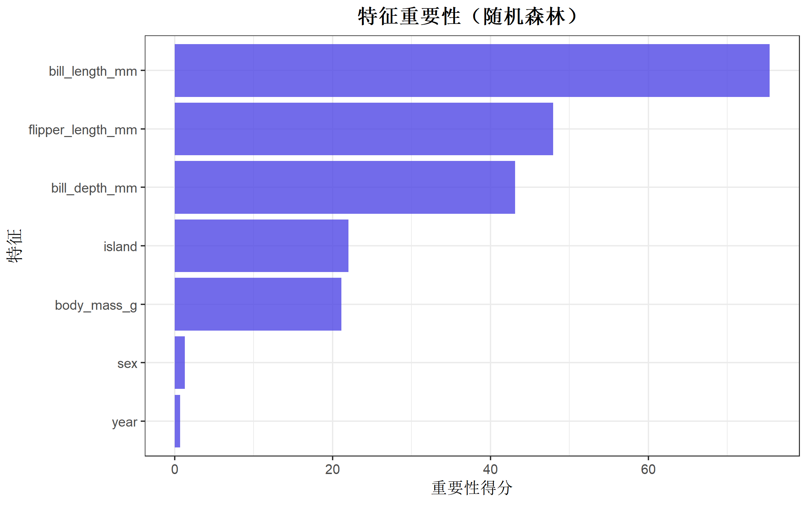

| 包名 | 功能 |
|---|---|
| mlr3 | 核心框架 |
| mlr3learners | 常用学习器（随机森林、XGBoost等） |
| mlr3tuning | 超参数调优 |
| mlr3pipelines | 数据预处理管道 |
| mlr3viz | 可视化 |
| mlr3verse | 一键加载所有包 |
| mlr3extralearners | 更多学习器 |
mlr3 机器学习全流程指南
机器学习与AI
机器学习框架
机器学习
调参
mlr3包的完整入门指南，涵盖任务创建、模型训练、预测、评估及超参数调优。
mlr3 简介
mlr3 是 R 语言中新一代机器学习框架，采用 R6 面向对象设计，提供统一、模块化的机器学习工作流。相比传统的 caret 包，mlr3 更加现代化、可扩展性更强。
核心优势
| 特点 | 说明 |
|---|---|
| 统一接口 | 所有算法使用相同的 API |
| 模块化设计 | 任务、学习器、重采样、评估指标独立封装 |
| 管道操作 | 支持复杂的预处理和模型组合 |
| 并行计算 | 原生支持并行化 |
| 可扩展 | 丰富的扩展包生态 |
mlr3 生态系统
安装与加载
# 安装核心包
install.packages("mlr3verse") # 一键安装所有常用包
# 或单独安装
install.packages(c(
"mlr3", "mlr3learners", "mlr3tuning",
"mlr3pipelines", "mlr3viz"
))library(mlr3verse)
library(ggplot2)
library(dplyr)
# 设置随机种子
set.seed(42)机器学习工作流概览
mlr3 的工作流程包含以下核心组件：
数据 → Task（任务） → Learner（学习器） → 训练/预测 → Measure（评估）
↓
Resampling（重采样）
↓
Tuning（调参）第一部分：Task（任务）
Task 是 mlr3 的数据容器，封装了数据集和预测目标。
创建分类任务
# 使用内置数据集
data("penguins", package = "palmerpenguins")
penguins_clean <- na.omit(penguins)
# 创建分类任务
task_penguins <- TaskClassif$new(
id = "penguins",
backend = penguins_clean,
target = "species"
)
task_penguins
── <TaskClassif> (333x8) ───────────────────────────────────────────────────────
• Target: species
• Target classes: Adelie (44%), Gentoo (36%), Chinstrap (20%)
• Properties: multiclass
• Features (7):
• int (3): body_mass_g, flipper_length_mm, year
• dbl (2): bill_depth_mm, bill_length_mm
• fct (2): island, sex创建回归任务
# 使用 mtcars 数据集
task_mtcars <- TaskRegr$new(
id = "mtcars",
backend = mtcars,
target = "mpg"
)
task_mtcars
── <TaskRegr> (32x11) ──────────────────────────────────────────────────────────
• Target: mpg
• Properties: -
• Features (10):
• dbl (10): am, carb, cyl, disp, drat, gear, hp, qsec, vs, wt使用内置任务
mlr3 提供了许多内置任务：
# 查看所有内置任务
as.data.table(mlr_tasks)[, .(key, task_type, nrow, ncol)]Key: <key>
key task_type nrow ncol
<char> <char> <int> <int>
1: ames_housing regr 2930 82
2: bike_sharing regr 17379 14
3: boston_housing regr 506 18
4: breast_cancer classif 683 10
5: california_housing regr 20640 10
6: german_credit classif 1000 21
7: ilpd classif 583 11
8: iris classif 150 5
9: kc_housing regr 21613 20
10: moneyball regr 1232 15
11: mtcars regr 32 11
12: optdigits classif 5620 65
13: penguins classif 344 8
14: penguins_simple classif 333 11
15: pima classif 768 9
16: ruspini clust 75 2
17: sonar classif 208 61
18: spam classif 4601 58
19: titanic classif 1309 11
20: usarrests clust 50 4
21: wine classif 178 14
22: zoo classif 101 17
key task_type nrow ncol
<char> <char> <int> <int># 加载内置任务
task_iris <- tsk("iris")
task_iris
── <TaskClassif> (150x5): Iris Flowers ─────────────────────────────────────────
• Target: Species
• Target classes: setosa (33%), versicolor (33%), virginica (33%)
• Properties: multiclass
• Features (4):
• dbl (4): Petal.Length, Petal.Width, Sepal.Length, Sepal.Width任务操作
# 查看特征
task_penguins$feature_names[1] "bill_depth_mm" "bill_length_mm" "body_mass_g"
[4] "flipper_length_mm" "island" "sex"
[7] "year" # 查看目标变量
task_penguins$target_names[1] "species"# 数据维度
c(nrow = task_penguins$nrow, ncol = task_penguins$ncol)nrow ncol
333 8 # 查看类别分布
task_penguins$data(cols = "species") |>
table()species
Adelie Chinstrap Gentoo
146 68 119 选择特征子集
# 只使用数值特征
task_numeric <- task_penguins$clone()
task_numeric$select(c(
"bill_length_mm", "bill_depth_mm",
"flipper_length_mm", "body_mass_g"
))
task_numeric$feature_names[1] "bill_depth_mm" "bill_length_mm" "body_mass_g"
[4] "flipper_length_mm"第二部分：Learner（学习器）
Learner 封装了机器学习算法。
查看可用学习器
# 分类学习器
as.data.table(mlr_learners)[
task_type == "classif",
.(key, label, packages)
] |> head(10)Key: <key>
key label
<char> <char>
1: classif.cv_glmnet GLM with Elastic Net Regularization
2: classif.debug Debug Learner for Classification
3: classif.featureless Featureless Classification Learner
4: classif.glmnet GLM with Elastic Net Regularization
5: classif.kknn k-Nearest-Neighbor
6: classif.lda Linear Discriminant Analysis
7: classif.log_reg Logistic Regression
8: classif.multinom Multinomial Log-Linear Model
9: classif.naive_bayes Naive Bayes
10: classif.nnet Single Layer Neural Network
packages
<list>
1: mlr3,mlr3learners,glmnet
2: mlr3
3: mlr3
4: mlr3,mlr3learners,glmnet
5: mlr3,mlr3learners,kknn
6: mlr3,mlr3learners,MASS
7: mlr3,mlr3learners,stats
8: mlr3,mlr3learners,nnet
9: mlr3,mlr3learners,e1071
10: mlr3,mlr3learners,nnet创建学习器
# 决策树
learner_tree <- lrn("classif.rpart")
# 随机森林
learner_rf <- lrn("classif.ranger", num.trees = 100)
# 逻辑回归
learner_log <- lrn("classif.log_reg")
learner_rf
── <LearnerClassifRanger> (classif.ranger): Random Forest ──────────────────────
• Model: -
• Parameters: num.threads=1, num.trees=100
• Packages: mlr3, mlr3learners, and ranger
• Predict Types: [response] and prob
• Feature Types: logical, integer, numeric, character, factor, and ordered
• Encapsulation: none (fallback: -)
• Properties: hotstart_backward, importance, missings, multiclass, oob_error,
selected_features, twoclass, and weights
• Other settings: use_weights = 'use'查看学习器参数
# 随机森林的参数
learner_rf$param_set$ids() [1] "always.split.variables" "class.weights"
[3] "holdout" "importance"
[5] "keep.inbag" "max.depth"
[7] "min.bucket" "min.node.size"
[9] "mtry" "mtry.ratio"
[11] "na.action" "num.random.splits"
[13] "node.stats" "num.threads"
[15] "num.trees" "oob.error"
[17] "regularization.factor" "regularization.usedepth"
[19] "replace" "respect.unordered.factors"
[21] "sample.fraction" "save.memory"
[23] "scale.permutation.importance" "seed"
[25] "split.select.weights" "splitrule"
[27] "verbose" "write.forest" 设置预测类型
# 设置输出概率（用于 AUC 等指标）
learner_rf$predict_type <- "prob"
learner_rf$predict_type[1] "prob"第三部分：训练与预测
基础训练流程
# 划分训练集和测试集
train_set <- sample(task_penguins$nrow, 0.8 * task_penguins$nrow)
test_set <- setdiff(seq_len(task_penguins$nrow), train_set)
# 训练模型
learner_rf$train(task_penguins, row_ids = train_set)
# 查看训练后的模型
learner_rf$modelRanger result
Call:
ranger::ranger(dependent.variable.name = task$target_names, data = task$data(), probability = self$predict_type == "prob", num.threads = 1L, num.trees = 100L)
Type: Probability estimation
Number of trees: 100
Sample size: 266
Number of independent variables: 7
Mtry: 2
Target node size: 10
Variable importance mode: none
Splitrule: gini
OOB prediction error (Brier s.): 0.02228252 预测
# 在测试集上预测
prediction <- learner_rf$predict(task_penguins, row_ids = test_set)
prediction
── <PredictionClassif> for 67 observations: ────────────────────────────────────
row_ids truth response prob.Adelie prob.Chinstrap prob.Gentoo
8 Adelie Adelie 0.82577778 0.1685079 0.005714286
9 Adelie Adelie 1.00000000 0.0000000 0.000000000
17 Adelie Adelie 0.98950000 0.0105000 0.000000000
--- --- --- --- --- ---
302 Chinstrap Chinstrap 0.01875000 0.9812500 0.000000000
305 Chinstrap Chinstrap 0.14038095 0.8427024 0.016916667
309 Chinstrap Chinstrap 0.08652778 0.9050595 0.008412698查看预测结果
# 预测结果转为数据框
pred_df <- as.data.table(prediction)
head(pred_df) row_ids truth response prob.Adelie prob.Chinstrap prob.Gentoo
<int> <fctr> <fctr> <num> <num> <num>
1: 8 Adelie Adelie 0.8257778 0.16850794 0.005714286
2: 9 Adelie Adelie 1.0000000 0.00000000 0.000000000
3: 17 Adelie Adelie 0.9895000 0.01050000 0.000000000
4: 22 Adelie Adelie 0.9920000 0.00800000 0.000000000
5: 26 Adelie Adelie 0.8459947 0.15300535 0.001000000
6: 29 Adelie Adelie 0.9665556 0.02233333 0.011111111混淆矩阵
# 生成混淆矩阵
prediction$confusion truth
response Adelie Chinstrap Gentoo
Adelie 31 0 0
Chinstrap 2 14 0
Gentoo 0 0 20第四部分：Measure（评估指标）
查看可用指标
# 分类指标
as.data.table(mlr_measures)[
task_type == "classif",
.(key, label)
] |> head(15)Key: <key>
key label
<char> <char>
1: classif.acc Classification Accuracy
2: classif.auc Area Under the ROC Curve
3: classif.bacc Balanced Accuracy
4: classif.bbrier Binary Brier Score
5: classif.ce Classification Error
6: classif.costs Cost-sensitive Classification
7: classif.dor Diagnostic Odds Ratio
8: classif.fbeta F-beta score
9: classif.fdr False Discovery Rate
10: classif.fn False Negatives
11: classif.fnr False Negative Rate
12: classif.fomr False Omission Rate
13: classif.fp False Positives
14: classif.fpr False Positive Rate
15: classif.logloss Log Loss计算评估指标
# 单个指标
prediction$score(msr("classif.acc"))classif.acc
0.9701493 # 多个指标
measures <- msrs(c("classif.acc", "classif.ce", "classif.bacc"))
prediction$score(measures) classif.acc classif.ce classif.bacc
0.97014925 0.02985075 0.97979798 常用分类指标
| 指标 | 代码 | 说明 |
|---|---|---|
| 准确率 | classif.acc |
正确预测比例 |
| 错误率 | classif.ce |
1 - 准确率 |
| AUC | classif.auc |
ROC曲线下面积（需要概率预测） |
| F1 | classif.fbeta |
精确率和召回率的调和平均 |
| Kappa | classif.kappa |
考虑随机一致性的准确率 |
常用回归指标
| 指标 | 代码 | 说明 |
|---|---|---|
| MSE | regr.mse |
均方误差 |
| RMSE | regr.rmse |
均方根误差 |
| MAE | regr.mae |
平均绝对误差 |
| R² | regr.rsq |
决定系数 |
第五部分：Resampling（重采样）
重采样用于更可靠地评估模型性能。
查看重采样方法
as.data.table(mlr_resamplings)[, .(key, label)]Key: <key>
key label
<char> <char>
1: bootstrap Bootstrap
2: custom Custom Splits
3: custom_cv Custom Split Cross-Validation
4: cv Cross-Validation
5: holdout Holdout
6: insample Insample Resampling
7: loo Leave-One-Out
8: ncv Nested CV
9: paired_subsampling Paired Subsampling
10: repeated_cv Repeated Cross-Validation
11: subsampling Subsampling交叉验证
# 5折交叉验证
cv5 <- rsmp("cv", folds = 5)
# 执行重采样
rr <- resample(task_penguins, learner_rf, cv5)
# 查看每折结果
rr$score(msr("classif.acc")) task_id learner_id resampling_id iteration classif.acc
<char> <char> <char> <int> <num>
1: penguins classif.ranger cv 1 0.9850746
2: penguins classif.ranger cv 2 0.9850746
3: penguins classif.ranger cv 3 1.0000000
4: penguins classif.ranger cv 4 0.9545455
5: penguins classif.ranger cv 5 1.0000000
Hidden columns: task, learner, resampling, prediction_test汇总结果
# 平均性能
rr$aggregate(msr("classif.acc"))classif.acc
0.9849389 # 多个指标
rr$aggregate(msrs(c("classif.acc", "classif.ce")))classif.acc classif.ce
0.98493894 0.01506106 重复交叉验证
# 5折交叉验证重复3次
rcv <- rsmp("repeated_cv", folds = 5, repeats = 3)
rr_repeated <- resample(task_penguins, learner_rf, rcv)
rr_repeated$aggregate(msr("classif.acc"))classif.acc
0.980989 可视化重采样结果
# 提取每折的准确率
scores <- rr$score(msr("classif.acc"))
ggplot(scores, aes(x = factor(iteration), y = classif.acc)) +
geom_col(fill = "#4f46e5", alpha = 0.8) +
geom_hline(
yintercept = mean(scores$classif.acc),
linetype = "dashed", color = "red"
) +
labs(
title = "5折交叉验证结果",
subtitle = paste("平均准确率:", round(mean(scores$classif.acc), 4)),
x = "折数",
y = "准确率"
) +
theme_bw(base_size = 12) +
theme(plot.title = element_text(hjust = 0.5, face = "bold"))
第六部分：Benchmarking（模型比较）
比较多个模型在同一任务上的表现。
设计基准测试
# 定义多个学习器
learners <- list(
lrn("classif.rpart", id = "决策树"),
lrn("classif.ranger", num.trees = 100, id = "随机森林"),
lrn("classif.kknn", id = "KNN"),
lrn("classif.naive_bayes", id = "朴素贝叶斯")
)
# 定义重采样
cv5 <- rsmp("cv", folds = 5)
# 创建基准测试设计
design <- benchmark_grid(
tasks = task_penguins,
learners = learners,
resamplings = cv5
)
design task learner resampling
<char> <char> <char>
1: penguins 决策树 cv
2: penguins 随机森林 cv
3: penguins KNN cv
4: penguins 朴素贝叶斯 cv运行基准测试
# 执行基准测试
bmr <- benchmark(design)
# 汇总结果
# 汇总结果
results_agg <- bmr$aggregate(msrs(c("classif.acc", "classif.ce")))
# 选择部分列展示并使用 kable
knitr::kable(as.data.frame(results_agg[, .(learner_id, classif.acc, classif.ce)]))| learner_id | classif.acc | classif.ce |
|---|---|---|
| 决策树 | 0.9399367 | 0.0600633 |
| 随机森林 | 0.9910448 | 0.0089552 |
| KNN | 0.9909995 | 0.0090005 |
| 朴素贝叶斯 | 0.9819539 | 0.0180461 |
可视化比较
# 提取所有结果
scores_all <- bmr$score(msr("classif.acc"))
ggplot(scores_all, aes(x = learner_id, y = classif.acc, fill = learner_id)) +
geom_boxplot(alpha = 0.8) +
scale_fill_manual(values = c("#4f46e5", "#10b981", "#f59e0b", "#ef4444")) +
labs(
title = "模型性能比较",
x = "模型",
y = "准确率"
) +
theme_bw(base_size = 12) +
theme(
legend.position = "none",
plot.title = element_text(hjust = 0.5, face = "bold")
)
排名分析
# 计算平均排名
# 计算平均排名
rank_res <- bmr$aggregate(msr("classif.acc"))[order(-classif.acc)]
knitr::kable(as.data.frame(rank_res[, .(learner_id, classif.acc)]))| learner_id | classif.acc |
|---|---|
| 随机森林 | 0.9910448 |
| KNN | 0.9909995 |
| 朴素贝叶斯 | 0.9819539 |
| 决策树 | 0.9399367 |
第七部分：Tuning（超参数调优）
定义搜索空间
# 随机森林的参数空间
learner_rf_tune <- lrn("classif.ranger")
search_space <- ps(
num.trees = p_int(lower = 50, upper = 500),
mtry = p_int(lower = 1, upper = 4),
min.node.size = p_int(lower = 1, upper = 10)
)
search_space<ParamSet(3)>
id class lower upper nlevels default value
<char> <char> <num> <num> <num> <list> <list>
1: num.trees ParamInt 50 500 451 <NoDefault[0]> [NULL]
2: mtry ParamInt 1 4 4 <NoDefault[0]> [NULL]
3: min.node.size ParamInt 1 10 10 <NoDefault[0]> [NULL]网格搜索
# 创建调优实例（新版 mlr3tuning 使用 ti() 函数）
instance <- ti(
task = task_penguins,
learner = learner_rf_tune,
resampling = rsmp("cv", folds = 3),
measures = msr("classif.acc"),
search_space = search_space,
terminator = trm("evals", n_evals = 20)
)
# 网格搜索调优器
tuner <- tnr("grid_search", resolution = 3)
# 执行调优
tuner$optimize(instance) num.trees mtry min.node.size learner_param_vals x_domain classif.acc
<int> <int> <int> <list> <list> <num>
1: 275 1 1 <list[4]> <list[3]> 0.990991查看调优结果
# 最优参数
instance$result_learner_param_vals$num.threads
[1] 1
$num.trees
[1] 275
$mtry
[1] 1
$min.node.size
[1] 1# 最优性能
instance$result_yclassif.acc
0.990991 调优历史可视化
# 提取调优历史
archive <- as.data.table(instance$archive)
ggplot(archive, aes(x = seq_len(nrow(archive)), y = classif.acc)) +
geom_line(color = "#4f46e5", linewidth = 0.8) +
geom_point(color = "#4f46e5", size = 2) +
geom_hline(
yintercept = instance$result_y,
linetype = "dashed", color = "red"
) +
labs(
title = "超参数调优过程",
subtitle = paste("最优准确率:", round(instance$result_y, 4)),
x = "迭代次数",
y = "准确率"
) +
theme_bw(base_size = 12) +
theme(plot.title = element_text(hjust = 0.5, face = "bold"))
使用最优参数训练最终模型
# 用最优参数创建学习器
learner_final <- lrn("classif.ranger")
learner_final$param_set$values <- instance$result_learner_param_vals
# 在全部数据上训练
learner_final$train(task_penguins)
learner_final$modelRanger result
Call:
ranger::ranger(dependent.variable.name = task$target_names, data = task$data(), probability = self$predict_type == "prob", min.node.size = 1L, mtry = 1L, num.threads = 1L, num.trees = 275L)
Type: Classification
Number of trees: 275
Sample size: 333
Number of independent variables: 7
Mtry: 1
Target node size: 1
Variable importance mode: none
Splitrule: gini
OOB prediction error: 1.20 % 随机搜索
# 随机搜索（更适合大搜索空间）
tuner_random <- tnr("random_search")
tuner_random$optimize(instance)第八部分：Pipeline（预处理管道）
mlr3pipelines 提供了灵活的数据预处理能力。
查看可用操作
# 常用预处理操作
as.data.table(mlr_pipeops)[, .(key, packages)] |> head(15)Key: <key>
key packages
<char> <list>
1: adas mlr3pipelines,smotefamily
2: blsmote mlr3pipelines,smotefamily
3: boxcox mlr3pipelines,bestNormalize
4: branch mlr3pipelines
5: chunk mlr3pipelines
6: classbalancing mlr3pipelines
7: classifavg mlr3pipelines,stats
8: classweights mlr3pipelines
9: colapply mlr3pipelines
10: collapsefactors mlr3pipelines
11: colroles mlr3pipelines
12: copy mlr3pipelines
13: datefeatures mlr3pipelines
14: decode mlr3pipelines
15: encode mlr3pipelines,stats创建预处理步骤
# 缺失值填充
po_impute <- po("imputemedian")
# 标准化
po_scale <- po("scale")
# 独热编码
po_encode <- po("encode")构建管道
# 创建完整管道：填充 → 编码 → 标准化 → 随机森林
graph <- po("imputemedian") %>>%
po("encode") %>>%
po("scale") %>>%
lrn("classif.ranger", num.trees = 100)
# 转换为学习器
graph_learner <- as_learner(graph)
graph_learner$id <- "pipeline_rf"
graph_learner
── <GraphLearner> (pipeline_rf) ────────────────────────────────────────────────
• Model: -
• Parameters: encode.method=one-hot, scale.robust=FALSE,
classif.ranger.num.threads=1, classif.ranger.num.trees=100
• Validate: NULL
• Packages: mlr3, mlr3pipelines, stats, mlr3learners, and ranger
• Predict Types: [response] and prob
• Feature Types: logical, integer, numeric, character, factor, ordered,
POSIXct, and Date
• Encapsulation: none (fallback: -)
• Properties: featureless, hotstart_backward, hotstart_forward, importance,
marshal, missings, multiclass, offset, oob_error, selected_features, twoclass,
and weights
• Other settings: use_weights = 'use'
── Pipeline: <INPUT> -> imputemedian -> encode -> scale -> classif.ranger -> <OUTPUT> 使用管道训练
# 使用原始数据（含缺失值）
data("penguins", package = "palmerpenguins")
task_full <- TaskClassif$new(
id = "penguins_full",
backend = penguins,
target = "species"
)
# 交叉验证
cv5 <- rsmp("cv", folds = 5)
rr_pipe <- resample(task_full, graph_learner, cv5)
rr_pipe$aggregate(msr("classif.acc"))classif.acc
0.9884058 可视化管道结构
# 简单管道可视化
graph_simple <- po("imputemedian") %>>%
po("scale") %>>%
lrn("classif.ranger")
graph_simple$plot()分支管道（模型选择）
# 创建分支：同时尝试多个模型
graph_branch <- po("imputemedian") %>>%
po("encode") %>>%
po("branch", options = c("rf", "tree", "knn")) %>>%
gunion(list(
rf = lrn("classif.ranger", num.trees = 100),
tree = lrn("classif.rpart"),
knn = lrn("classif.kknn")
)) %>>%
po("unbranch")
graph_branch
── Graph with 7 PipeOps: ───────────────────────────────────────────────────────
ID State sccssors prdcssors
<char> <char> <char> <char>
imputemedian <<UNTRAINED>> encode
encode <<UNTRAINED>> branch imputemedian
branch <<UNTRAINED>> rf.classif.range... encode
rf.classif.range... <<UNTRAINED>> unbranch branch
tree.classif.rpa... <<UNTRAINED>> unbranch branch
knn.classif.kknn <<UNTRAINED>> unbranch branch
unbranch <<UNTRAINED>> rf.classif.range...
── Pipeline: non-sequential 第九部分：特征工程
特征选择
# 基于过滤器的特征选择
library(mlr3filters)
# 查看可用过滤器
as.data.table(mlr_filters)[, .(key, task_types, packages)]# 使用随机森林内置的特征重要性
learner_rf_imp <- lrn("classif.ranger",
num.trees = 100,
importance = "impurity"
)
learner_rf_imp$train(task_penguins)
# 提取特征重要性
importance_scores <- learner_rf_imp$model$variable.importance
importance_df <- data.frame(
feature = names(importance_scores),
score = importance_scores
)
importance_df feature score
bill_depth_mm bill_depth_mm 43.1413318
bill_length_mm bill_length_mm 75.3820546
body_mass_g body_mass_g 21.1290406
flipper_length_mm flipper_length_mm 47.9487795
island island 22.0412215
sex sex 1.2935402
year year 0.6906693可视化特征重要性
ggplot(importance_df, aes(x = reorder(feature, score), y = score)) +
geom_col(fill = "#4f46e5", alpha = 0.8) +
coord_flip() +
labs(
title = "特征重要性（随机森林）",
x = "特征",
y = "重要性得分"
) +
theme_bw(base_size = 12) +
theme(plot.title = element_text(hjust = 0.5, face = "bold"))
在管道中进行特征选择
# 使用 select 操作符选择特定特征
graph_fs <- po("select",
selector = selector_name(c("flipper_length_mm", "bill_length_mm", "bill_depth_mm"))
) %>>%
lrn("classif.ranger", num.trees = 100)
graph_fs_learner <- as_learner(graph_fs)
graph_fs_learner$id <- "fs_rf"
# 评估
rr_fs <- resample(task_penguins, graph_fs_learner, rsmp("cv", folds = 5))
rr_fs$aggregate(msr("classif.acc"))classif.acc
0.9819539 第十部分：完整实战案例
案例：企鹅物种分类
# 1. 准备数据
data("penguins", package = "palmerpenguins")
task <- TaskClassif$new(
id = "penguin_classification",
backend = penguins,
target = "species"
)
# 2. 构建预处理管道
# 注意：先用众数填充因子缺失值，再用中位数填充数值缺失值
preprocess <- po("imputemode") %>>% # 填充因子缺失值（如 sex）
po("imputemedian") %>>% # 填充数值缺失值
po("encode") %>>%
po("scale")
# 3. 定义候选模型
learners <- list(
决策树 = preprocess %>>% lrn("classif.rpart"),
随机森林 = preprocess %>>% lrn("classif.ranger", num.trees = 200),
KNN = preprocess %>>% lrn("classif.kknn", k = 5),
朴素贝叶斯 = preprocess %>>% lrn("classif.naive_bayes")
)
# 转换为学习器
graph_learners <- lapply(names(learners), function(name) {
gl <- as_learner(learners[[name]])
gl$id <- name
gl
})
# 4. 基准测试
design <- benchmark_grid(
tasks = task,
learners = graph_learners,
resamplings = rsmp("repeated_cv", folds = 5, repeats = 3)
)
bmr <- benchmark(design)结果汇总
# 汇总统计
results <- bmr$aggregate(msrs(c("classif.acc", "classif.ce")))
results[order(-classif.acc)] nr task_id learner_id resampling_id iters classif.acc
<int> <char> <char> <char> <int> <num>
1: 2 penguin_classification 随机森林 repeated_cv 15 0.9874112
2: 3 penguin_classification KNN repeated_cv 15 0.9835180
3: 1 penguin_classification 决策树 repeated_cv 15 0.9418869
4: 4 penguin_classification 朴素贝叶斯 repeated_cv 15 0.7684854
classif.ce
<num>
1: 0.01258880
2: 0.01648196
3: 0.05811310
4: 0.23151463
Hidden columns: resample_result可视化最终结果
scores_final <- bmr$score(msr("classif.acc"))
ggplot(scores_final, aes(x = learner_id, y = classif.acc, fill = learner_id)) +
geom_boxplot(alpha = 0.8, outlier.shape = NA) +
geom_jitter(width = 0.2, alpha = 0.5, size = 1) +
scale_fill_manual(values = c("#4f46e5", "#10b981", "#f59e0b", "#ef4444")) +
labs(
title = "企鹅物种分类 - 模型比较",
subtitle = "5折交叉验证 × 3次重复",
x = "模型",
y = "准确率"
) +
theme_bw(base_size = 12) +
theme(
legend.position = "none",
plot.title = element_text(hjust = 0.5, face = "bold")
) +
ylim(0.9, 1.0)
选择最优模型并调参
# 对最优模型（随机森林）进行调参
learner_best <- as_learner(
preprocess %>>% lrn("classif.ranger")
)
search_space <- ps(
classif.ranger.num.trees = p_int(100, 500),
classif.ranger.mtry = p_int(1, 4),
classif.ranger.min.node.size = p_int(1, 10)
)
instance <- ti(
task = task,
learner = learner_best,
resampling = rsmp("cv", folds = 5),
measures = msr("classif.acc"),
search_space = search_space,
terminator = trm("evals", n_evals = 30)
)
tuner <- tnr("random_search")
tuner$optimize(instance) classif.ranger.num.trees classif.ranger.mtry classif.ranger.min.node.size
<int> <int> <int>
1: 455 2 3
learner_param_vals x_domain classif.acc
<list> <list> <num>
1: <list[6]> <list[3]> 0.9912617# 最优参数
instance$result_learner_param_vals$encode.method
[1] "one-hot"
$scale.robust
[1] FALSE
$classif.ranger.num.threads
[1] 1
$classif.ranger.num.trees
[1] 455
$classif.ranger.mtry
[1] 2
$classif.ranger.min.node.size
[1] 3# 最优性能
instance$result_yclassif.acc
0.9912617 常用代码速查
创建任务
# 分类任务
task <- TaskClassif$new(id, backend, target)
# 回归任务
task <- TaskRegr$new(id, backend, target)
# 内置任务
task <- tsk("iris")创建学习器
# 基础语法
learner <- lrn("classif.ranger", num.trees = 100)
# 设置预测类型
learner$predict_type <- "prob"训练与预测
# 训练
learner$train(task, row_ids = train_ids)
# 预测
prediction <- learner$predict(task, row_ids = test_ids)
# 评估
prediction$score(msr("classif.acc"))重采样
# 交叉验证
rr <- resample(task, learner, rsmp("cv", folds = 5))
rr$aggregate(msr("classif.acc"))基准测试
design <- benchmark_grid(tasks, learners, resamplings)
bmr <- benchmark(design)
bmr$aggregate(measures)调参
# 定义搜索空间
search_space <- ps(
param1 = p_int(lower, upper),
param2 = p_dbl(lower, upper)
)
# 调优（新版使用 ti() 函数）
instance <- ti(task, learner, resampling, measures, search_space, terminator)
tuner <- tnr("grid_search")
tuner$optimize(instance)总结
mlr3 提供了完整的机器学习工作流：
| 阶段 | 组件 | 功能 |
|---|---|---|
| 数据准备 | Task | 封装数据和目标 |
| 建模 | Learner | 封装算法 |
| 评估 | Measure | 定义评估指标 |
| 验证 | Resampling | 交叉验证等 |
| 比较 | Benchmark | 多模型对比 |
| 调参 | Tuning | 超参数优化 |
| 预处理 | Pipeline | 数据转换流程 |
推荐学习资源
与其他框架对比
| 特性 | mlr3 | caret | tidymodels |
|---|---|---|---|
| 设计 | R6 OOP | S3 函数式 | tidy 函数式 |
| 管道 | mlr3pipelines | 内置 | recipes |
| 扩展性 | 高 | 中 | 高 |
| 学习曲线 | 中等 | 低 | 中等 |
| 并行支持 | 原生 | 需配置 | 原生 |